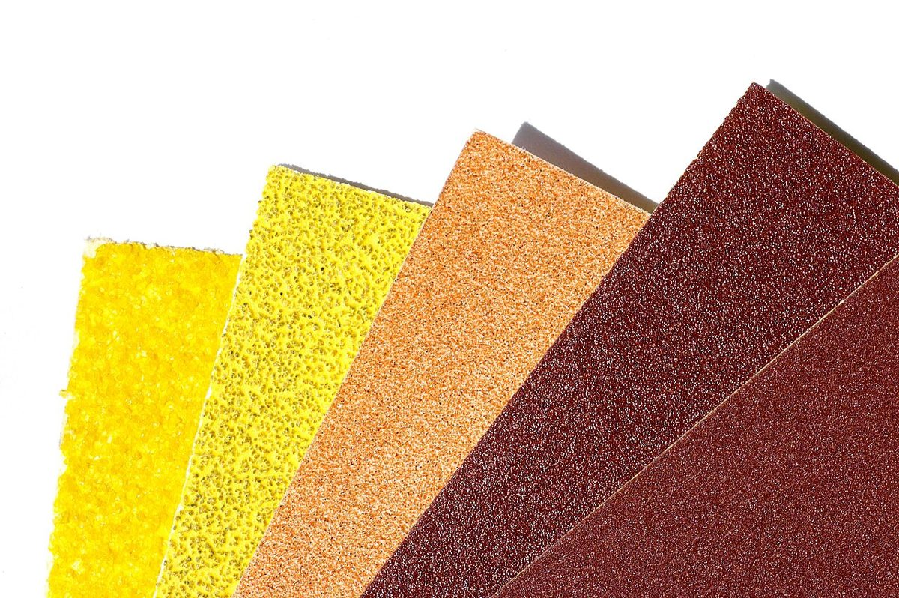
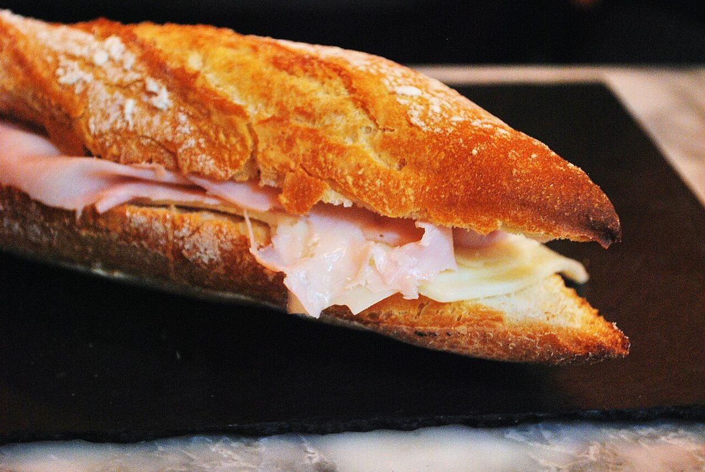
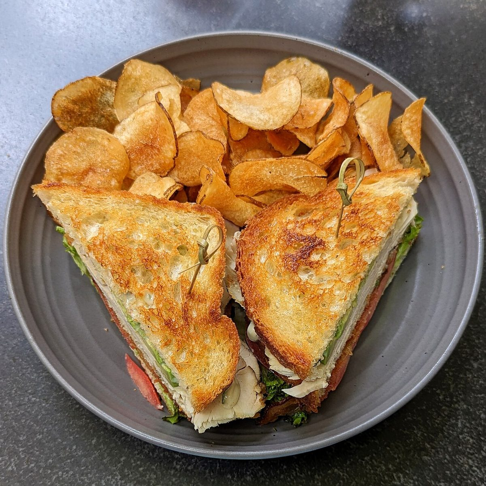
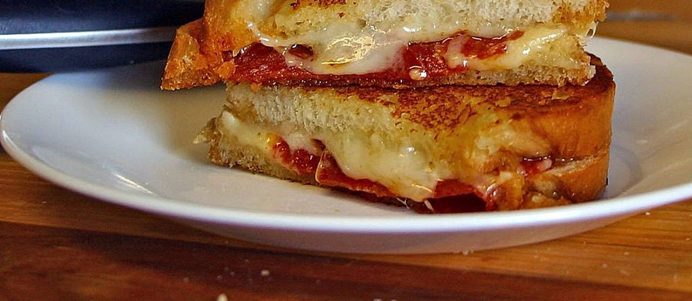
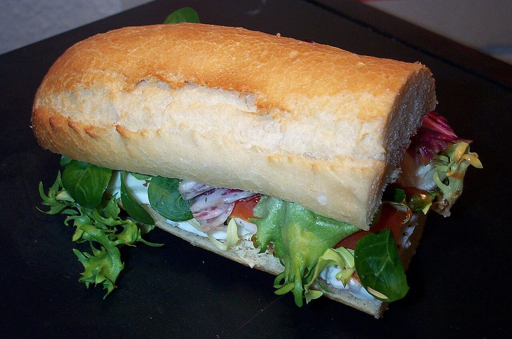
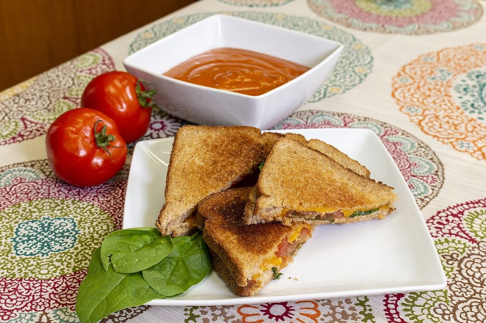
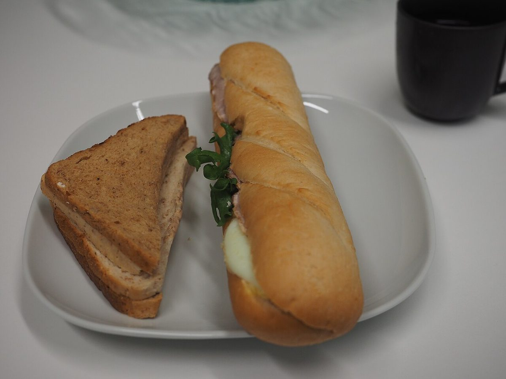

ベーカリー(サンドイッチ系) / 青森県八戸市売市
サンドマニア
裏に番手が刷られた紙やすりのように、
荒目の#60から仕上げの#800まで。
五枚のページを、順に重ねました。
※紙やすりのテーマは制作側の連想で、お店の理念・由来とは無関係です。


#60断面の見本(イメージ)
下の写真はフリー素材のイメージです。お店で実際に提供しているものとは限りません。





#60お店の情報
| 所在地 | 〒031-0073 青森県八戸市売市２丁目２−２５ |
|---|---|
| 電話 | なし |
| 営業時間 | 準備中 |
| 定休日 | 準備中 |
| メニュー・価格 | 準備中 |
| ご予約 | 準備中 |
| 駐車場 | 準備中 |
| SNS | Instagram @sandmania.hachinohe |
確認できている情報は所在地とInstagramのみです。その他の項目は準備中です。